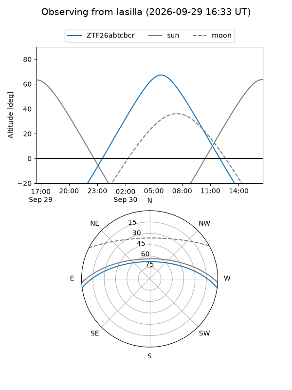
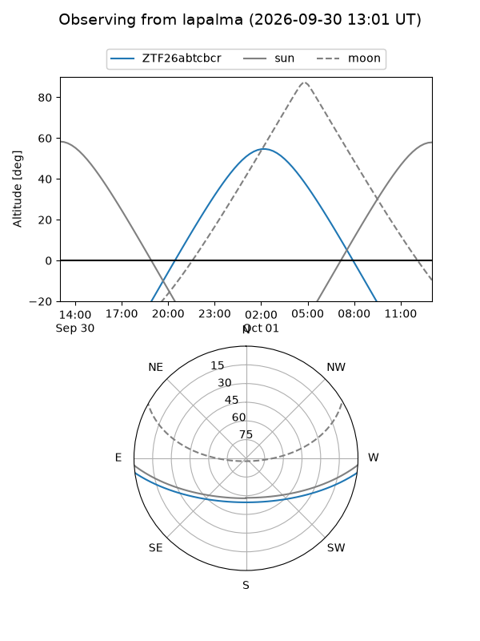
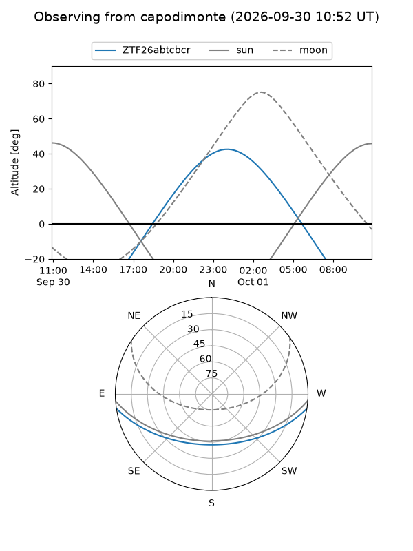
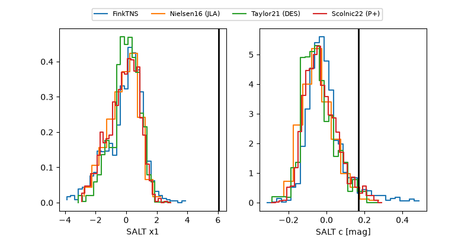

ZTF26abtcbcr
Target ZTF26abtcbcr at 2026-09-30 18:43
Aliases and brokers:
FINK-ZTF: ztf.fink-portal.org/ZTF26abtcbcr
Lasair-ZTF: lasair-ztf.lsst.ac.uk/objects/ZTF26abtcbcr
ALeRCE-ZTF: alerce.online/object/ZTF26abtcbcr
Direct TNS query: direct search
alt names
ZTF26abtcbcr (ztf,fink_ztf)
Coordinates:
equatorial (ra, dec) = 24.3369,-6.69639
equatorial (HMS+DMS) = 01:37:20.85,-06:41:47.02
galactic (l, b) = (153.0964,-66.84035)
Flags:
peak dt: +15.0
Photometry:
last ztfg=20.44, ztfr=20.29
3 ztfg, 4 ztfr detections
Lightcurve
Visibility



Additional plots
